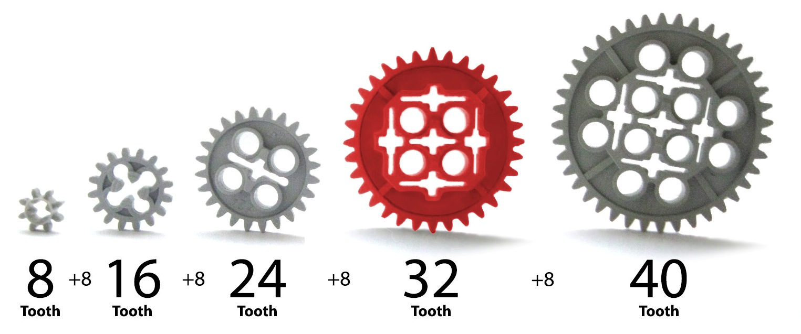
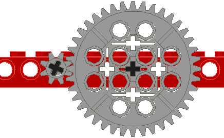
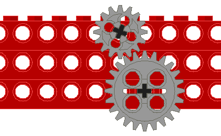
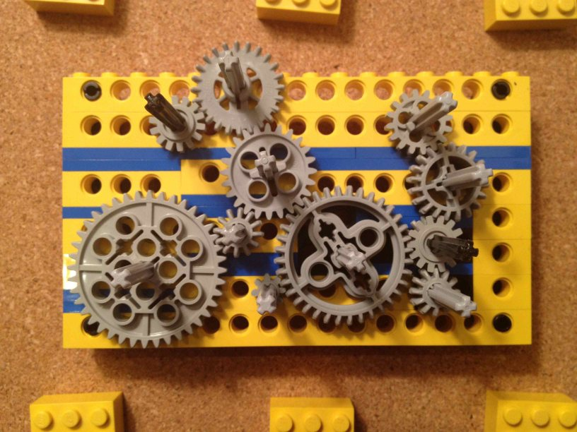

gears revision 8920
^ Parts infobox ^^
| image | HerringboneRackAndPinion.jpg |
| designers | |
| date | |
| vitamins | |
| materials | |
| transformations | [[3d_printing|3D Printing]], [[hobbing|Hobbing]], [[casting|Casting]], [[injection_molding|Injection molding]] |
| lifecycles | |
| parts | |
| techniques | |
| tools | [[3d_printers|3D printers]], [[metal_lathes|Metal lathes]], [[laser_cutters|Laser cutters]], [[plasma_cutters|Plasma cutters]], [[wire_edm_cutters|Wire EDM Cutters]] |
| files | |
| suppliers | |
| git | |
Introduction
We need Gear Families that all work with each other. This includes popular construction toys. But we're also scaling stuff up to work with '''Big Iron''', like 40mm and 100mm frames. And rack and pinion.
Challenges
Compatibility with existing gear and sprocket families:
- Meccano/Erector/Vex
- LEGO Technic




- Bicycle
- Rack (unrolled gear) and pinion
Approaches
Laser Cutter
- Fabrication on laser cutters is common, works well.
3D Printing
<youtube>UtRJ4lnNAXY</youtube>
CNC mill/router
*Sherline examples
*Taig Mill examples
*Bridgeport examples
Hybrid
Hybrid fabrication; RepRapping and then precise tidying of each layer with a milling/routing head is the most promising.
*Direct: We can make the plastic gear directly
*Mold: We can make the molds for filled epoxy gears. See HandmadeGears.
<youtube>w3i8i-9bjqI</youtube>
Hobbing
*Timothy Edward's build of a Meccano Gear Making Machine, technically a gear hobber:
via http://edwards.web.users.btopenworld.com/meccano/modelgear.htm
Wire EDM
: ''Main page: ElectrochemicalPrintedCircuitBoardHead#electric discharge machining''
- Forrest Higgs proposed this once.
Casting/Mouldmaking
*We can make molds for Filled epoxy
CNC plasma cutting
2D cuts can be stacked, with through holes for bolts to provide alignment and compression, allowing for the construction of sturdy power transmission components for keyed shafts.
Off the shelf
- PRO Gear Rack, 39" (1 meter) / PRO Rack and Pinion Drive, NEMA 34
- Internal Insert Module 1.0 Gear Rack (0.5 meter) / Module 1.0 Pinion Gear 16 / 20 / 32 / 40 teeth
- Module 1.0 Gear Rack – External (0.5 meter) / Module 1.0 Pinion Gear 16 / 20 / 32 / 40 teeth
References
<youtube>76yRObMIwa0</youtube>